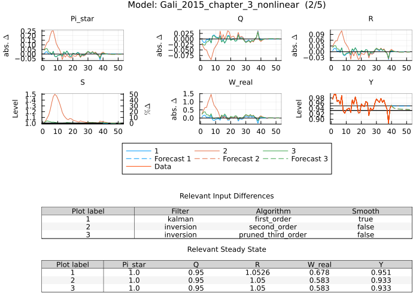

Model Estimates
plot_model_estimates visualizes the variables used in an estimation problem: the filtered or smoothed estimates of endogenous variables and exogenous shocks, an unconditional forecast extending beyond the last data period, and optionally the contribution of each shock to the endogenous variables. Each subplot shows a variable or shock as a line and, when enabled, shock contributions as stacked bars measured against the non‑stochastic or stochastic steady state relevant for the selected solution algorithm. The unconditional forecast (shown as a dashed line by default for 12 periods) displays the model's expected path absent any exongeos shocks starting from the final filtered state. Occasionally binding constraints are not supported by this function. The function returns a Vector{Plots.Plot}, enabling the figures to be displayed, saved, or combined further.
The figures are built with StatsPlots.jl/Plots.jl and expect a KeyedArray from the AxisKeys package as data input. Axis 1 must contain the observable names, axis 2 the period labels. Observables are automatically matched to model variables, renamed (if desired), and sorted alphabetically in the plot legends. Period labels can be of any format compatible with Plots.jl and are used to fill the x-axis of the plots.
In order to run the examples on this page, the following packages need to be installed and loaded:
using MacroModelling, StatsPlots, CSV, DataFrames, AxisKeys, DatesThe latter four packages are only needed to load the data.
Next, define and load a model:
@model FS2000 begin
dA[0] = exp(gam + z_e_a * e_a[x])
log(m[0]) = (1 - rho) * log(mst) + rho * log(m[-1]) + z_e_m * e_m[x]
- P[0] / (c[1] * P[1] * m[0]) + bet * P[1] * (alp * exp( - alp * (gam + log(e[1]))) * k[0] ^ (alp - 1) * n[1] ^ (1 - alp) + (1 - del) * exp( - (gam + log(e[1])))) / (c[2] * P[2] * m[1])=0
W[0] = l[0] / n[0]
- (psi / (1 - psi)) * (c[0] * P[0] / (1 - n[0])) + l[0] / n[0] = 0
R[0] = P[0] * (1 - alp) * exp( - alp * (gam + z_e_a * e_a[x])) * k[-1] ^ alp * n[0] ^ ( - alp) / W[0]
1 / (c[0] * P[0]) - bet * P[0] * (1 - alp) * exp( - alp * (gam + z_e_a * e_a[x])) * k[-1] ^ alp * n[0] ^ (1 - alp) / (m[0] * l[0] * c[1] * P[1]) = 0
c[0] + k[0] = exp( - alp * (gam + z_e_a * e_a[x])) * k[-1] ^ alp * n[0] ^ (1 - alp) + (1 - del) * exp( - (gam + z_e_a * e_a[x])) * k[-1]
P[0] * c[0] = m[0]
m[0] - 1 + d[0] = l[0]
e[0] = exp(z_e_a * e_a[x])
y[0] = k[-1] ^ alp * n[0] ^ (1 - alp) * exp( - alp * (gam + z_e_a * e_a[x]))
gy_obs[0] = dA[0] * y[0] / y[-1]
gp_obs[0] = (P[0] / P[-1]) * m[-1] / dA[0]
log_gy_obs[0] = log(gy_obs[0])
log_gp_obs[0] = log(gp_obs[0])
end
@parameters FS2000 begin
alp = 0.356
bet = 0.993
gam = 0.0085
mst = 1.0002
rho = 0.129
psi = 0.65
del = 0.01
z_e_a = 0.035449
z_e_m = 0.008862
endThe second argument is always the data on which to base the model estimates. The following code loads data from a CSV file and converts it to a KeyedArray:
dat = CSV.read("test/data/FS2000_data.csv", DataFrame)
data = KeyedArray(Array(dat)',Variable = Symbol.("log_".*names(dat)),Time = 1:size(dat)[1])
data = log.(data)Given the model and data the model estimates can be plotted as follows:
plot_model_estimates(FS2000, data)
The function plots the filtered or smoothed estimates of the model variables that correspond to the observables in the data, along with the shock decomposition. Each subplot displays an observable or filtered variable (as a line plot) or the contribution of a shock (as stacked bars) measured against the relevant steady state for the chosen solution algorithm.
Another way to plot the model estimates including the shock decomposition is by calling:
plot_shock_decomposition(FS2000, data)This produces the same output as plot_model_estimates with shock_decomposition = true, which is the default setting for first order, pruned second order, and pruned third order solution algorithms.
Compare Model Estimates with plot_model_estimates!
The plot_model_estimates! function (note the exclamation mark !) adds additional model estimates to an existing plot created with plot_model_estimates, enabling direct comparison between different scenarios. Any input argument that affects the model's output (such as datasets, solution algorithm, parameter values, filtering methods, or smoothing options) can be varied to compare how these changes influence the estimates. See the respective subsections below (e.g., Data, Filter, Solution Algorithm, Parameter Values) for details on specific arguments.
When using plot_model_estimates!, the new estimates are overlaid on the existing plot with a different color. Note that when combining multiple plots, shock decomposition is automatically disabled to avoid visual clutter - only the line plots showing the estimates are displayed.
Legend and table behavior:
- When inputs differ in one dimension (e.g., only the algorithm changes), the legend displays the value of that input dimension for each line (e.g.,
:first_order,:second_order). - When inputs differ in multiple dimensions (e.g., different datasets and parameters), the legend shows sequential numbers (1, 2, 3, ...) and references a table below the plot that details all input differences for each numbered scenario.
- Different data inputs are indexed with a running number in the legend for easy reference.
- Additional tables below show the relevant steady state values for each scenario to help identify differences across solution methods or parameter values.
Example with single input difference:
When only one input differs (e.g., the solution algorithm), the legend shows the algorithm names directly:
sim_data = simulate(Gali_2015_chapter_3_nonlinear)([:Y],:,:simulate)
# Plot first-order estimates
plot_model_estimates(Gali_2015_chapter_3_nonlinear, sim_data)
# Add second-order estimates to the same plot
plot_model_estimates!(Gali_2015_chapter_3_nonlinear,
sim_data,
algorithm = :second_order)
The legend will display :first_order and :second_order to identify each estimate.
The subplot y-axis labels change depending on the steady state values and data availability for each scenario. If the steady state values differ across scenarios and there is no data for a variable, the y-axis label will indicate that the lines are in absolute deviations from the steady state. In that case no percent deviation is shown on the secondary y-axis, as the steady state values differ. In case the steady state values are the same across scenarios or there is data for a variable, the y-axis label indicates absolute levels on the primary y-axis. If the steady state values are the same and if the values are strictly positive the secondary y-axis shows the percent deviation scale. In case the steady state values differ but there is data for a variable, then levels are shown without percent deviation as the secondary axis and the steady states are shown as horizontal black lines.
Example with multiple input differences:
When multiple inputs differ (e.g., both algorithm and parameters), the legend shows sequential numbers and a table details the differences:
# Plot with baseline parameters
plot_model_estimates(Gali_2015_chapter_3_nonlinear,
sim_data,
parameters = :β => 0.99)
# Add with different algorithm AND parameters
plot_model_estimates!(Gali_2015_chapter_3_nonlinear,
sim_data,
parameters = :β => 0.95,
algorithm = :second_order)
The legend will show 1 and 2, with a table below the plot listing the parameter and algorithm values for each scenario.
Data (Required)
The data argument [Type: KeyedArray{Float64}] contains the data used for filtering or smoothing the model estimates. The first axis must contain variable names (as Symbols or Strings) and the second axis must contain period labels (as any format compatible with Plots.jl). Note that the second axis is used to fill the x-axis of the plots.
Plotting model estimates with Symbols as variable names can be done as follows, but here the way to load the data is shown again for completeness, and can be done in various ways:
variable_names = Symbol.("log_".*names(dat))
dat = CSV.read("test/data/FS2000_data.csv", DataFrame)
data = KeyedArray(Array(dat)',Variable = variable_names, Time = 1:size(dat)[1])
data = log.(data)
plot_model_estimates(FS2000, data)The same can be done with Strings as variable names:
variable_names = "log_".*names(dat)
dat = CSV.read("test/data/FS2000_data.csv", DataFrame)
data = KeyedArray(Array(dat)',Variable = variable_names, Time = 1:size(dat)[1])
data = log.(data)
plot_model_estimates(FS2000, data)A useful feature is that the second dimension of the KeyedArray can be used to customize the x-axis labels of the plots. The following example shows how to create date labels for quarterly data starting from 1960-01-01:
dat = CSV.read("test/data/FS2000_data.csv", DataFrame)
data = KeyedArray(Array(dat)', Variable = Symbol.("log_".*names(dat)), Time = 1:size(dat)[1])
data = log.(data)
function quarterly_dates(start_date::Date, len::Int)
dates = Vector{Date}(undef, len)
current_date = start_date
for i in 1:len
dates[i] = current_date
current_date = current_date + Dates.Month(3)
end
return dates
end
data_rekey = rekey(data, :Time => quarterly_dates(Date(1960, 1, 1), size(data,2)))
plot_model_estimates(FS2000, data_rekey)
The function generates the date labels by starting from a given date and adding three months for each subsequent period. The rekey function from AxisKeys is then used to replace the second axis of the KeyedArray with the generated date labels. The resulting plot now has dates on the x-axis. Note that any input type for the second axis that Plots.jl can handle is valid.
Estimates based on different data can also be compared:
sim_data = simulate(FS2000)([:log_gy_obs,:log_gp_obs],:,:simulate)
plot_model_estimates!(FS2000, sim_data)
Note that the different data inputs are indexed with a running number in the legend.
Data in levels
By default, the data is assumed to be in levels (data_in_levels = true). If the data is in absolute deviations from the non-stochastic steady state, set data_in_levels = false.
The previously shown example uses data in levels, so that it is compatible with the default setting:
dat = CSV.read("test/data/FS2000_data.csv", DataFrame)
data = KeyedArray(Array(dat)', Variable = "log_".*names(dat), Time = 1:size(dat)[1])
data = log.(data)
plot_model_estimates(FS2000, data)Data in absolute deviations from the non-stochastic steady state can be used as follows.
A practical way to create data in deviation from the non-stochastic steady state is to use the simulate function with the argument levels = false. This generates random data in deviations for all endogenous variables, of which in the example below only R and y are used:
sim = simulate(FS2000, levels = false)
plot_model_estimates(FS2000, sim([:y,:R],:,:simulate), data_in_levels = false)
Filter
The filter argument [Type: Symbol] specifies the filtering method to use. Options are :kalman for the Kalman filter or smoother (depending on the smooth argument) and :inversion for the inversion filter. By default, the Kalman smoother is used for first order solutions and the inversion method for higher order (nonlinear) solutions.
A model featuring more than two shocks clearly illustrates the difference between the two filtering methods. The Gali (2015) model from chapter 3 with three shocks is presented below:
@model Gali_2015_chapter_3_nonlinear begin
W_real[0] = C[0] ^ σ * N[0] ^ φ
Q[0] = β * (C[1] / C[0]) ^ (-σ) * Z[1] / Z[0] / Pi[1]
R[0] = 1 / Q[0]
Y[0] = A[0] * (N[0] / S[0]) ^ (1 - α)
R[0] = Pi[1] * realinterest[0]
R[0] = 1 / β * Pi[0] ^ ϕᵖⁱ * (Y[0] / Y[ss]) ^ ϕʸ * exp(nu[0])
C[0] = Y[0]
log(A[0]) = ρ_a * log(A[-1]) + std_a * eps_a[x]
log(Z[0]) = ρ_z * log(Z[-1]) - std_z * eps_z[x]
nu[0] = ρ_ν * nu[-1] + std_nu * eps_nu[x]
MC[0] = W_real[0] / (S[0] * Y[0] * (1 - α) / N[0])
1 = θ * Pi[0] ^ (ϵ - 1) + (1 - θ) * Pi_star[0] ^ (1 - ϵ)
S[0] = (1 - θ) * Pi_star[0] ^ (( - ϵ) / (1 - α)) + θ * Pi[0] ^ (ϵ / (1 - α)) * S[-1]
Pi_star[0] ^ (1 + ϵ * α / (1 - α)) = ϵ * x_aux_1[0] / x_aux_2[0] * (1 - τ) / (ϵ - 1)
x_aux_1[0] = MC[0] * Y[0] * Z[0] * C[0] ^ (-σ) + β * θ * Pi[1] ^ (ϵ + α * ϵ / (1 - α)) * x_aux_1[1]
x_aux_2[0] = Y[0] * Z[0] * C[0] ^ (-σ) + β * θ * Pi[1] ^ (ϵ - 1) * x_aux_2[1]
log_y[0] = log(Y[0])
log_W_real[0] = log(W_real[0])
log_N[0] = log(N[0])
pi_ann[0] = 4 * log(Pi[0])
i_ann[0] = 4 * log(R[0])
r_real_ann[0] = 4 * log(realinterest[0])
M_real[0] = Y[0] / R[0] ^ η
end
@parameters Gali_2015_chapter_3_nonlinear begin
σ = 1
φ = 5
ϕᵖⁱ = 1.5
ϕʸ = 0.125
θ = 0.75
ρ_ν = 0.5
ρ_z = 0.5
ρ_a = 0.9
β = 0.99
η = 3.77
α = 0.25
ϵ = 9
τ = 0
std_a = .01
std_z = .05
std_nu = .0025
endThe Kalman smoother (because by default smooth = true for the first order solution algorithm) can be explicitly specified as follows (but it would be the default in this case and there is no need to specify it):
sim_data = simulate(Gali_2015_chapter_3_nonlinear)([:Y],:,:simulate)
plot_model_estimates(Gali_2015_chapter_3_nonlinear, sim_data, filter = :kalman)and the inversion filter can be overlayed, in order to compare with the Kalman smoother, as:
plot_model_estimates!(Gali_2015_chapter_3_nonlinear, sim_data, filter = :inversion)
Note that the two filtering methods yield different results when there are more shocks than observables, as is the case here. The Kalman smoother (due to the default setting smooth = true) produces smoother estimates by optimally combining information from all periods, while the inversion filter directly solves for shocks that match the observables in each period. Furthermore, when comparing two estimates only the estimates but not the shock decomposition are shown.
The inversion filter has no guarantee to find the global minimum-norm shocks for higher-order solutions. Finding the global minimum-norm shocks is NP-hard because the number of feasible roots grows exponentially with the dimensionality of the problem. Any gradient-based solver started at the origin (including the default LagrangeNewton) returns the root whose basin of attraction contains the origin rather than guaranteeing the global optimum.
Smooth
The smooth argument [Default: true, Type: Bool] specifies whether to use smoothing (only available for the Kalman filter and set to true by default for the Kalman filter) or filtering (available for both and set to true in case the inversion filter is used). If true, smoothed estimates are plotted, otherwise filtered estimates are shown. Smoothing uses information from the entire sample to estimate the states at each point in time, while filtering only uses information up to the current period.
Smoothed estimates using the Kalman filter can be plotted as follows (this is the default behaviour and does not need to be specified explicitly):
sim_data = simulate(Gali_2015_chapter_3_nonlinear)([:Y],:,:simulate)
plot_model_estimates(Gali_2015_chapter_3_nonlinear,
sim_data,
smooth = true)comparing with filtered estimates (using the Kalman filter) can be done like this:
plot_model_estimates!(Gali_2015_chapter_3_nonlinear,
sim_data,
smooth = false)
additionally the filtered estimates can be compared using the inversion filter (with smooth = false being the default for the inversion filter which doesn't need to be specified explicitly):
plot_model_estimates!(Gali_2015_chapter_3_nonlinear,
sim_data,
filter = :inversion,
smooth = false)
Presample periods
The presample_periods argument [Default: 0, Type: Int] specifies the number of periods at the beginning of the data that are not shown in the plots but are used for filtering. This is useful if the goal is to view only later periods in the sample, while still using the earlier periods for filtering.
For example, to exclude the first 20 periods from the plots, while still using them for filtering, run:
sim_data = simulate(Gali_2015_chapter_3_nonlinear)([:Y],:,:simulate)
plot_model_estimates(Gali_2015_chapter_3_nonlinear, sim_data, presample_periods = 20)
Note that now only 20 periods of the 40 periods in the data are shown in the plots, starting from period 21, while the first 20 periods were used in the filtering process.
Forecast periods
The forecast_periods argument [Default: 12, Type: Int] specifies the number of unconditional forecast periods to display after the last data period. The forecast shows the model's expected dynamics without further exogenous shocks, starting from the final filtered state. The forecast is displayed as a dashed line to distinguish it from the model estimates, and a "Forecast" entry is added to the legend.
To plot model estimates with the default 12-period forecast:
sim_data = simulate(Gali_2015_chapter_3_nonlinear)([:Y],:,:simulate)
plot_model_estimates(Gali_2015_chapter_3_nonlinear, sim_data)
The dashed line shows the unconditional forecast extending 12 periods beyond the last data point.
To specify a custom forecast horizon, for example 24 periods:
sim_data = simulate(Gali_2015_chapter_3_nonlinear)([:Y],:,:simulate)
plot_model_estimates(Gali_2015_chapter_3_nonlinear, sim_data, forecast_periods = 24)
To disable the forecast and show only model estimates, set forecast_periods = 0:
sim_data = simulate(Gali_2015_chapter_3_nonlinear)([:Y],:,:simulate)
plot_model_estimates(Gali_2015_chapter_3_nonlinear, sim_data, forecast_periods = 0)
The forecast also works with plot_model_estimates! for comparing multiple scenarios. Each scenario can have its own forecast horizon:
sim_data = simulate(Gali_2015_chapter_3_nonlinear)([:Y],:,:simulate)
plot_model_estimates(Gali_2015_chapter_3_nonlinear, sim_data, parameters = :β => 0.99)
plot_model_estimates!(Gali_2015_chapter_3_nonlinear, sim_data, parameters = :β => 0.95, forecast_periods = 18)
The legend shows each scenario with its corresponding forecast as a dashed line in the same color.
Shock decomposition
The shock_decomposition argument [Type: Bool] specifies whether to include shock decompositions in the plots. By default, it is set to true for first order, pruned second order, and pruned third order solutions. For second order and third order solutions shock_decomposition = false, as the algorithm is not designed to handle it. If set to true, stacked bar charts showing the contribution of each shock to the variable's deviation from its steady state are included below the line plots for each variable.
Shock decompositions are included by default in the plots (except for second and third order solutions), and it can be specified explicitly as follows:
sim_data = simulate(Gali_2015_chapter_3_nonlinear)([:Y],:,:simulate)
plot_model_estimates(Gali_2015_chapter_3_nonlinear, sim_data, shock_decomposition = true)
This will generate plots with stacked bar charts below the line plots, illustrating how each shock contributes to the variable's deviation from its steady state over time.
To exclude shock decomposition from the plots, set the argument to false:
plot_model_estimates(Gali_2015_chapter_3_nonlinear, sim_data, shock_decomposition = false)
This shows only the line plots without the stacked bar charts for shock contributions. When combining multiple plots, the setting for shock_decomposition is ignored and false.
Shocks
The shocks argument determines the shocks shown in the plots as subplots and in the shock decomposition. By default, all shocks are included (:all). Inputs can be either a Symbol or String (e.g. :eps_a, "eps_a", or :all), or Tuple, Matrix or Vector of String or Symbol. :none means no shocks are shown, and :all shows all shocks. If not all shocks are shown, then their respective subplot is ommitted and if a shock decomposition was intended to be shown, the ommitted shocks will be summarised and netted under the label Other shocks (net).
To recall the shocks of a model use the get_shocks function:
get_shocks(Gali_2015_chapter_3_nonlinear)
# 3-element Vector{String}:
# "eps_a"
# "eps_nu"
# "eps_z"To plot only a subset of shocks, specify them as follows, using a Vector of Symbols:
sim_data = simulate(Gali_2015_chapter_3_nonlinear)([:Y],:,:simulate)
plot_model_estimates(Gali_2015_chapter_3_nonlinear,
sim_data,
shocks = [:eps_a, :eps_nu])
Note, how the ommitted shock: :eps_z is not shown but (the only) part of Other shocks (net).
The same can be done with a Vector of Strings:
plot_model_estimates(Gali_2015_chapter_3_nonlinear,
sim_data,
shocks = ["eps_a", "eps_nu"])or Tuples of Symbols:
plot_model_estimates(Gali_2015_chapter_3_nonlinear,
sim_data,
shocks = (:eps_a, :eps_nu))or Tuples of Strings:
plot_model_estimates(Gali_2015_chapter_3_nonlinear,
sim_data,
shocks = ("eps_a", "eps_nu"))or Matrix of Symbols:
plot_model_estimates(Gali_2015_chapter_3_nonlinear,
sim_data,
shocks = [:eps_a :eps_z])or Matrix of Strings:
plot_model_estimates(Gali_2015_chapter_3_nonlinear,
sim_data,
shocks = ["eps_a" "eps_z"])or simply as a Symbol
plot_model_estimates(Gali_2015_chapter_3_nonlinear,
sim_data,
shocks = :eps_a)or simply as a String
plot_model_estimates(Gali_2015_chapter_3_nonlinear,
sim_data,
shocks = "eps_a")Not showing any shocks by using shocks = :none:
plot_model_estimates(Gali_2015_chapter_3_nonlinear,
sim_data,
shocks = :none)
means that no subplots with the estimated shocks are shown and the shock decompositions only distinguish between the initial state and Other shocks (net).
Solution Algorithm
The algorithm argument [Default: :first_order, Type: Symbol] specifies the solution algorithm used for the filtering. Options include :first_order, :second_order, :third_order, as well as :pruned_second_order and :pruned_third_order. The choice of algorithm affects the available filtering method (only first order support the Kalman filter, all solution algorithms support the inversion filter), steady state levels used in the plots and the dynamics of the variables.
The following example uses a second-order perturbation solution:
sim_data = simulate(Gali_2015_chapter_3_nonlinear)([:Y],:,:simulate)
plot_model_estimates(Gali_2015_chapter_3_nonlinear,
sim_data,
algorithm = :second_order)
The most notable difference is that at second order, dynamics are observed for S, which remains constant at first order (under certainty equivalence). Additionally, the steady state levels change because the stochastic steady state incorporates risk effects (see horizontal lines). This has consequences for the conditions as they are in levels.
To compare the two solution methods side by side, use plot_conditional_forecast! to add to an existing plot:
plot_model_estimates(Gali_2015_chapter_3_nonlinear,
sim_data)
plot_model_estimates!(Gali_2015_chapter_3_nonlinear,
sim_data,
algorithm = :second_order)
The plots now show both solution methods overlaid. The first-order solution is shown in blue, the second-order solution in orange, as indicated in the legend below the plot. Note that the steady state levels can be different for the two solution methods. For variables where the relevant steady state is the same for both methods (e.g., S), the level appears on the left axis and percentage deviations on the right axis. For variables where the steady state differs between methods (e.g., R), only absolute level deviations (abs. Δ) appear on the left axis. The relevant steady state levels are shown in a table below the plot for reference (rounded to help identify differences). The relevant steady state also implies that the conditions vary in terms of distance to steady state and thereby in the shocks they require for them to be fulfilled. For the variable Y the conditions given a first order solution imply a lower absolute deviation from the relevant steady state than for the second order solution.
Additional solution methods can be added to the same plot:
plot_model_estimates!(Gali_2015_chapter_3_nonlinear,
sim_data,
algorithm = :pruned_third_order)
Note that the pruned third-order solution incorporates time-varying risk and the dynamics differ relative to lower order solutions. The additional solution appears as another colored line with corresponding entries in both the legend and the steady state table below.
Variables to Plot
The variables argument (default: :all_excluding_obc) specifies for which variables to show results. Variable names can be specified as either a Symbol or String (e.g. :y or "y"), or Tuple, Matrix or Vector of String or Symbol. Any variables not part of the model will trigger a warning. :all_excluding_auxiliary_and_obc includes all variables except auxiliary variables and those related to occasionally binding constraints (OBC). :all_excluding_obc includes all variables except those related to occasionally binding constraints. :all includes all variables.
Specific variables can be selected to plot. The following example selects only output (Y) and inflation (Pi) using a Vector of Symbols. Note that selecting shocks can be done using the shocks argument as shown above.
sim_data = simulate(Gali_2015_chapter_3_nonlinear)([:Y],:,:simulate)
plot_model_estimates(Gali_2015_chapter_3_nonlinear,
sim_data,
variables = [:Y, :Pi])
The plot now displays the two selected variables (sorted alphabetically) as well as the corresponding shocks.
The same can be done using a Tuple:
plot_model_estimates(Gali_2015_chapter_3_nonlinear,
sim_data,
variables = (:Y, :Pi))a Matrix:
plot_model_estimates(Gali_2015_chapter_3_nonlinear,
sim_data,
variables = [:Y :Pi])or providing the variable names as Strings:
plot_model_estimates(Gali_2015_chapter_3_nonlinear,
sim_data,
variables = ["Y", "Pi"])or a single variable as a Symbol:
plot_model_estimates(Gali_2015_chapter_3_nonlinear,
sim_data,
variables = :Y)or as a String:
plot_model_estimates(Gali_2015_chapter_3_nonlinear,
sim_data,
variables = "Y")Then there are some predefined options:
:all_excluding_auxiliary_and_obc (default) plots all variables except auxiliary variables and those used to enforce occasionally binding constraints (OBC).
plot_model_estimates(Gali_2015_chapter_3_nonlinear,
sim_data,
variables = :all_excluding_auxiliary_and_obc):all_excluding_obc plots all variables except those used to enforce occasionally binding constraints (OBC).
plot_model_estimates(Gali_2015_chapter_3_nonlinear,
sim_data,
variables = :all_excluding_obc)To see auxiliary variables, use a model that defines them. The FS2000 model can be used:
@model FS2000 begin
dA[0] = exp(gam + z_e_a * e_a[x])
log(m[0]) = (1 - rho) * log(mst) + rho * log(m[-1]) + z_e_m * e_m[x]
- P[0] / (c[1] * P[1] * m[0]) + bet * P[1] * (alp * exp( - alp * (gam + log(e[1]))) * k[0] ^ (alp - 1) * n[1] ^ (1 - alp) + (1 - del) * exp( - (gam + log(e[1])))) / (c[2] * P[2] * m[1])=0
W[0] = l[0] / n[0]
- (psi / (1 - psi)) * (c[0] * P[0] / (1 - n[0])) + l[0] / n[0] = 0
R[0] = P[0] * (1 - alp) * exp( - alp * (gam + z_e_a * e_a[x])) * k[-1] ^ alp * n[0] ^ ( - alp) / W[0]
1 / (c[0] * P[0]) - bet * P[0] * (1 - alp) * exp( - alp * (gam + z_e_a * e_a[x])) * k[-1] ^ alp * n[0] ^ (1 - alp) / (m[0] * l[0] * c[1] * P[1]) = 0
c[0] + k[0] = exp( - alp * (gam + z_e_a * e_a[x])) * k[-1] ^ alp * n[0] ^ (1 - alp) + (1 - del) * exp( - (gam + z_e_a * e_a[x])) * k[-1]
P[0] * c[0] = m[0]
m[0] - 1 + d[0] = l[0]
e[0] = exp(z_e_a * e_a[x])
y[0] = k[-1] ^ alp * n[0] ^ (1 - alp) * exp( - alp * (gam + z_e_a * e_a[x]))
gy_obs[0] = dA[0] * y[0] / y[-1]
gp_obs[0] = (P[0] / P[-1]) * m[-1] / dA[0]
log_gy_obs[0] = log(gy_obs[0])
log_gp_obs[0] = log(gp_obs[0])
end
@parameters FS2000 begin
alp = 0.356
bet = 0.993
gam = 0.0085
mst = 1.0002
rho = 0.129
psi = 0.65
del = 0.01
z_e_a = 0.035449
z_e_m = 0.008862
endSince both c and P appear in t+2, they generate auxiliary variables in the model. Plotting the model estimates for all variables excluding OBC-related ones means auxiliary variables are shown:
sim_data_FS2000 = simulate(FS2000)([:y],:,:simulate)
plot_model_estimates(FS2000,
sim_data_FS2000,
variables = :all_excluding_obc)
Both c and P appear twice: once as the variable itself and once as an auxiliary variable with the ᴸ⁽¹⁾ superscript, representing the value of the variable in t+1 as expected in t.
:all plots all variables including auxiliary variables and those used to enforce occasionally binding constraints (OBC).
Use the Gali_2015_chapter_3 model with an effective lower bound (note the use of the max function in the Taylor rule):
@model Gali_2015_chapter_3_obc begin
W_real[0] = C[0] ^ σ * N[0] ^ φ
Q[0] = β * (C[1] / C[0]) ^ (-σ) * Z[1] / Z[0] / Pi[1]
R[0] = 1 / Q[0]
Y[0] = A[0] * (N[0] / S[0]) ^ (1 - α)
R[0] = Pi[1] * realinterest[0]
R[0] = max(R̄ , 1 / β * Pi[0] ^ ϕᵖⁱ * (Y[0] / Y[ss]) ^ ϕʸ * exp(nu[0]))
C[0] = Y[0]
log(A[0]) = ρ_a * log(A[-1]) + std_a * eps_a[x]
log(Z[0]) = ρ_z * log(Z[-1]) - std_z * eps_z[x]
nu[0] = ρ_ν * nu[-1] + std_nu * eps_nu[x]
MC[0] = W_real[0] / (S[0] * Y[0] * (1 - α) / N[0])
1 = θ * Pi[0] ^ (ϵ - 1) + (1 - θ) * Pi_star[0] ^ (1 - ϵ)
S[0] = (1 - θ) * Pi_star[0] ^ (( - ϵ) / (1 - α)) + θ * Pi[0] ^ (ϵ / (1 - α)) * S[-1]
Pi_star[0] ^ (1 + ϵ * α / (1 - α)) = ϵ * x_aux_1[0] / x_aux_2[0] * (1 - τ) / (ϵ - 1)
x_aux_1[0] = MC[0] * Y[0] * Z[0] * C[0] ^ (-σ) + β * θ * Pi[1] ^ (ϵ + α * ϵ / (1 - α)) * x_aux_1[1]
x_aux_2[0] = Y[0] * Z[0] * C[0] ^ (-σ) + β * θ * Pi[1] ^ (ϵ - 1) * x_aux_2[1]
log_y[0] = log(Y[0])
log_W_real[0] = log(W_real[0])
log_N[0] = log(N[0])
pi_ann[0] = 4 * log(Pi[0])
i_ann[0] = 4 * log(R[0])
r_real_ann[0] = 4 * log(realinterest[0])
M_real[0] = Y[0] / R[0] ^ η
end
@parameters Gali_2015_chapter_3_obc begin
R̄ = 1.0
σ = 1
φ = 5
ϕᵖⁱ = 1.5
ϕʸ = 0.125
θ = 0.75
ρ_ν = 0.5
ρ_z = 0.5
ρ_a = 0.9
β = 0.99
η = 3.77
α = 0.25
ϵ = 9
τ = 0
std_a = .01
std_z = .05
std_nu = .0025
R > 1.0001
endPlotting the model estimates for all variables including OBC-related ones reveals the OBC-related auxiliary variables:
sim_data_Gali_obc = simulate(Gali_2015_chapter_3_obc)([:R],:,:simulate)
plot_model_estimates(Gali_2015_chapter_3_obc,
sim_data_Gali_obc,
variables = :all)
The OBC-related variables appear in the last subplot, but note that simulated data respected the OBCs but the model estimates do not and explain the data using the standard model equations.
Parameter Values
When no parameters are provided, the solution uses the previously defined parameter values. Parameters can be provided as a Vector of values, or as a Vector or Tuple of Pairs mapping parameter Symbols or Strings to values. The solution is recalculated when new parameter values differ from the previous ones.
Start by changing the discount factor β from 0.99 to 0.95:
sim_data = simulate(Gali_2015_chapter_3_nonlinear)([:Y],:,:simulate)
plot_model_estimates(Gali_2015_chapter_3_nonlinear,
sim_data,
parameters = :β => 0.95)
The steady states and dynamics changed as a result of changing the discount factor, also because the absolute deviation of the conditons on the endogenous variables from the relevant steady state changed. To better visualize the differences between β = 0.99 and β = 0.95, the two conditional forecasts can be overlaid (compared). Since parameter changes are permanent, first reset β = 0.99 before overlaying the model estimates with β = 0.95 on top of it:
plot_model_estimates(Gali_2015_chapter_3_nonlinear,
sim_data,
parameters = :β => 0.99)
plot_model_estimates!(Gali_2015_chapter_3_nonlinear,
sim_data,
parameters = :β => 0.95)
The legend below the plot indicates which color corresponds to which β value, with the table underneath showing the relevant steady states. Note that both the steady states and dynamics differ across the two β values, even when the steady state remains the same (e.g., for Y).
Multiple parameters can also be changed simultaneously to compare the results to previous plots. This example changes β to 0.97 and τ to 0.5 using a Tuple of Pairs and define the variables with Symbols:
plot_model_estimates!(Gali_2015_chapter_3_nonlinear,
sim_data,
parameters = (:β => 0.97, :τ => 0.5))
Since the plot function calls now differ in multiple input arguments, the legend indicates which color corresponds to which input combination, with the table showing steady states for all three combinations. The change in steady state for the latest change means substantially different absolute differences relevant for the conditions and therefore also different size of shocks to enforce the conditions.
A Vector of Pairs can also be used:
plot_model_estimates!(Gali_2015_chapter_3_nonlinear,
sim_data,
parameters = [:β => 0.98, :τ => 0.25])
Note that the parameter change led to a different relevant steady state for variable Y. Since Y is also an observable, the subplot is shown in levels with the relevant steady states being indicated by black lines and their respective values mentioned in the table below the plot. This behaviour is in contrast to cases where the variables is not an observable, in which case absolute deviations from steady state are shown.
Alternatively, use a Vector of parameter values in the order they were defined in the model. To obtain them:
params = get_parameters(Gali_2015_chapter_3_nonlinear, values = true)
# 16-element Vector{Pair{String, Float64}}:
# "σ" => 1.0
# "φ" => 5.0
# "ϕᵖⁱ" => 1.5
# "ϕʸ" => 0.125
# "θ" => 0.75
# "ρ_ν" => 0.5
# "ρ_z" => 0.5
# "ρ_a" => 0.9
# "β" => 0.95
# "η" => 3.77
# "α" => 0.25
# "ϵ" => 9.0
# "τ" => 0.5
# "std_a" => 0.01
# "std_z" => 0.05
# "std_nu" => 0.0025
param_vals = [p[2] for p in params]
# 16-element Vector{Float64}:
# 1.0
# 5.0
# 1.5
# 0.125
# 0.75
# 0.5
# 0.5
# 0.9
# 0.95
# 3.77
# 0.25
# 9.0
# 0.5
# 0.01
# 0.05
# 0.0025
plot_model_estimates!(Gali_2015_chapter_3_nonlinear,
sim_data,
parameters = param_vals)Plot Labels
The label argument (type: Union{String,Symbol,Real}) controls labels that appear in plots when using the plot_conditional_forecast! function to overlay multiple conditional forecasts. By default, labels take on the values of the one dimensional input that differs and are sequential numbers in case the input differs along more than one dimension. Furthermore, custom labels can be provided using this argument. Acceptable inputs are a String, Symbol, or a Real.
Custom labels are particularly useful when inputs differ in complex ways (e.g., shock matrices or multiple input changes). For example, let's compare the model estimates of the Gali_2015_chapter_3_nonlinear model for a 1 standard deviation eps_a shock with β = 0.99 and τ = 0 to the model estimates with β = 0.95 and τ = 0.5 using custom labels String input:
sim_data = simulate(Gali_2015_chapter_3_nonlinear)([:Y],:,:simulate)
plot_model_estimates(Gali_2015_chapter_3_nonlinear,
sim_data,
parameters = (:β => 0.99, :τ => 0.0),
label = "Std. params")
plot_model_estimates!(Gali_2015_chapter_3_nonlinear,
sim_data,
parameters = (:β => 0.95, :τ => 0.5),
label = "Alt. params")
The legend now displays the custom label names instead of sequential numbers (1 and 2). Additionally, the tables showing input differences and steady states use the custom labels in the first column instead of sequential numbers.
The same result can be achieved using Symbols (though they are less expressive):
sim_data = simulate(Gali_2015_chapter_3_nonlinear)([:Y],:,:simulate)
plot_model_estimates(Gali_2015_chapter_3_nonlinear,
sim_data,
parameters = (:β => 0.99, :τ => 0.0),
label = :standard)
plot_model_estimates!(Gali_2015_chapter_3_nonlinear,
sim_data,
parameters = (:β => 0.95, :τ => 0.5),
label = :alternative)or with Real inputs:
plot_model_estimates(Gali_2015_chapter_3_nonlinear,
sim_data,
parameters = (:β => 0.99, :τ => 0.0),
label = 0.99)
plot_model_estimates!(Gali_2015_chapter_3_nonlinear,
sim_data,
parameters = (:β => 0.95, :τ => 0.5),
label = 0.95)Plot Attributes
The plot_attributes argument (default: Dict(), type: Dict) accepts a dictionary of attributes passed on to the plotting function. See the Plots.jl documentation for details.
The color palette can be customized using the plot_attributes argument. The following example defines a custom color palette (inspired by the European Commission's economic reports) to plot the model estimates (colors are used for the shock decomposition) of the Gali_2015_chapter_3_nonlinear model. First, define the custom color palette using hex color codes:
ec_color_palette =
[
"#FFD724", # "Sunflower Yellow"
"#353B73", # "Navy Blue"
"#2F9AFB", # "Sky Blue"
"#B8AAA2", # "Taupe Grey"
"#E75118", # "Vermilion"
"#6DC7A9", # "Mint Green"
"#F09874", # "Coral"
"#907800" # "Olive"
]Then plot the model estimates:
sim_data = simulate(Gali_2015_chapter_3_nonlinear)([:Y],:,:simulate)
plot_model_estimates(Gali_2015_chapter_3_nonlinear,
sim_data,
plot_attributes = Dict(:palette => ec_color_palette))
The colors of the bars now follow the custom color palette.
Other attributes such as the font family can also be modified (see here for GR font options):
plot_model_estimates(Gali_2015_chapter_3_nonlinear,
sim_data,
plot_attributes = Dict(:fontfamily => "computer modern"))
All text in the plot now uses the Computer Modern font. Note that font rendering inherits the constraints of the plotting backend (GR in this case).
Plots Per Page
The plots_per_page argument (default: 9, type: Int) controls the number of subplots per page. When the number of variables exceeds this value, multiple pages are created. The following example selects 9 variables and sets plots_per_page to 2:
sim_data = simulate(Gali_2015_chapter_3_nonlinear)([:Y],:,:simulate)
plot_model_estimates(Gali_2015_chapter_3_nonlinear,
sim_data,
variables = [:Y, :Pi, :R, :C, :N, :W_real, :MC, :i_ann, :A],
plots_per_page = 2)
The first four pages display two variables (sorted alphabetically). The title indicates the current page and the total number of pages.
Display Plots
The show_plots argument (default: true, type: Bool), when true, displays the plots; otherwise, they are only returned as an object.
sim_data = simulate(Gali_2015_chapter_3_nonlinear)([:Y],:,:simulate)
plot_model_estimates(Gali_2015_chapter_3_nonlinear,
sim_data,
show_plots = false)Saving Plots
The save_plots argument (default: false, type: Bool), when true, saves the plots to disk; otherwise, they are only displayed and returned as an object.
Related arguments control the saving behavior:
save_plots_format(default::pdf, type:Symbol): output format of saved plots. See input formats compatible with GR for valid formats.save_plots_path(default:".", type:String): path where plots are saved. If the path does not exist, it will be created automatically.save_plots_name(default:"estimation", type:Union{String, Symbol}): prefix prepended to the filename when saving plots.
Each plot is saved as a separate file with a name indicating the prefix, model name, shocks, and a sequential number for multiple plots (e.g., estimation__ModelName__1.pdf).
The following example saves all conditional forecasts for the Gali_2015_chapter_3_nonlinear model as PNG files in the ../plots directory with estim as the filename prefix:
sim_data = simulate(Gali_2015_chapter_3_nonlinear)([:Y],:,:simulate)
plot_model_estimates(Gali_2015_chapter_3_nonlinear,
sim_data,
save_plots = true,
save_plots_format = :png,
save_plots_path = "./../plots",
save_plots_name = :estim)The plots appear in the specified folder with the specified prefix. Each plot is saved in a separate file with a name reflecting the model, and a sequential index when the number of variables exceeds the plots per page.
Variable and Shock Renaming (rename dictionary)
The rename_dictionary argument (default: Dict(), type: AbstractDict{<:Union{Symbol, String}, <:Union{Symbol, String}}) maps variable or shock symbols to custom display names in plots. This is particularly useful when comparing models with different variable naming conventions, allowing them to be displayed with consistent labels.
For example, to rename variables for clearer display:
sim_data = simulate(Gali_2015_chapter_3_nonlinear)([:Y],:,:simulate)
plot_model_estimates(Gali_2015_chapter_3_nonlinear,
sim_data,
rename_dictionary = Dict(:Y => "Output", :Pi => "Inflation", :R => "Interest Rate"))
This feature is especially valuable when overlaying conditional forecasts from different models. Consider comparing FS2000 (which uses lowercase variable names like c) with Gali_2015_chapter_3_nonlinear (which uses uppercase variable names like C). The rename_dictionary allows harmonizing these names when plotting them together:
sim_data_FS2000 = simulate(FS2000)([:y],:,:simulate)
plot_model_estimates(FS2000,
sim_data_FS2000,
rename_dictionary = Dict(
:c => "Consumption",
:y => "Output",
:R => "Interest Rate"
))
sim_data = simulate(Gali_2015_chapter_3_nonlinear)([:Y],:,:simulate)
plot_model_estimates!(Gali_2015_chapter_3_nonlinear,
sim_data,
rename_dictionary = Dict(
:C => "Consumption",
:Y => "Output",
:R => "Interest Rate"
))
Both models now appear in the plot with consistent labels, facilitating comparison.
The rename_dictionary also works with shocks. For example, Gali_2015_chapter_3_nonlinear has shocks eps_a and eps_nu, while FS2000 has e_a and e_m. To compare these with consistent labels:
plot_model_estimates(Gali_2015_chapter_3_nonlinear,
sim_data,
rename_dictionary = Dict(
:eps_a => "Technology Shock",
:eps_nu => "Monetary Policy Shock"
))
plot_model_estimates!(FS2000,
sim_data_FS2000,
rename_dictionary = Dict(
:e_a => "Technology Shock",
:e_m => "Monetary Policy Shock"
))
The rename_dictionary accepts flexible type combinations for keys and values, both Symbol and String types work interchangeably:
# All of these are valid and equivalent:
Dict(:Y => "Output") # Symbol key, String value
Dict("Y" => "Output") # String key, String value
Dict(:Y => :Output) # Symbol key, Symbol value
Dict("Y" => :Output) # String key, Symbol valueThis flexibility is particularly useful for models like Backus_Kehoe_Kydland_1992, which uses String representations of variable and shock names (because of {}):
# Define the Backus model (abbreviated for clarity)
@model Backus_Kehoe_Kydland_1992 begin
for co in [H, F]
Y{co}[0] = ((LAMBDA{co}[0] * K{co}[-4]^theta{co} * N{co}[0]^(1-theta{co}))^(-nu{co}) + sigma{co} * Z{co}[-1]^(-nu{co}))^(-1/nu{co})
K{co}[0] = (1-delta{co})*K{co}[-1] + S{co}[0]
X{co}[0] = for lag in (-4+1):0 phi{co} * S{co}[lag] end
A{co}[0] = (1-eta{co}) * A{co}[-1] + N{co}[0]
L{co}[0] = 1 - alpha{co} * N{co}[0] - (1-alpha{co})*eta{co} * A{co}[-1]
U{co}[0] = (C{co}[0]^mu{co}*L{co}[0]^(1-mu{co}))^gamma{co}
psi{co} * mu{co} / C{co}[0]*U{co}[0] = LGM[0]
psi{co} * (1-mu{co}) / L{co}[0] * U{co}[0] * (-alpha{co}) = - LGM[0] * (1-theta{co}) / N{co}[0] * (LAMBDA{co}[0] * K{co}[-4]^theta{co}*N{co}[0]^(1-theta{co}))^(-nu{co})*Y{co}[0]^(1+nu{co})
for lag in 0:(4-1)
beta{co}^lag * LGM[lag]*phi{co}
end +
for lag in 1:4
-beta{co}^lag * LGM[lag] * phi{co} * (1-delta{co})
end = beta{co}^4 * LGM[+4] * theta{co} / K{co}[0] * (LAMBDA{co}[+4] * K{co}[0]^theta{co} * N{co}[+4]^(1-theta{co})) ^ (-nu{co})* Y{co}[+4]^(1+nu{co})
LGM[0] = beta{co} * LGM[+1] * (1+sigma{co} * Z{co}[0]^(-nu{co}-1)*Y{co}[+1]^(1+nu{co}))
NX{co}[0] = (Y{co}[0] - (C{co}[0] + X{co}[0] + Z{co}[0] - Z{co}[-1]))/Y{co}[0]
end
(LAMBDA{H}[0]-1) = rho{H}{H}*(LAMBDA{H}[-1]-1) + rho{H}{F}*(LAMBDA{F}[-1]-1) + Z_E{H} * E{H}[x]
(LAMBDA{F}[0]-1) = rho{F}{F}*(LAMBDA{F}[-1]-1) + rho{F}{H}*(LAMBDA{H}[-1]-1) + Z_E{F} * E{F}[x]
for co in [H,F] C{co}[0] + X{co}[0] + Z{co}[0] - Z{co}[-1] end = for co in [H,F] Y{co}[0] end
end
@parameters Backus_Kehoe_Kydland_1992 begin
K_ss = 11
K[ss] = K_ss | beta
mu = 0.34
gamma = -1.0
alpha = 1
eta = 0.5
theta = 0.36
nu = 3
sigma = 0.01
delta = 0.025
phi = 1/4
psi = 0.5
Z_E = 0.00852
rho{H}{H} = 0.906
rho{F}{F} = rho{H}{H}
rho{H}{F} = 0.088
rho{F}{H} = rho{H}{F}
end
sim_data = simulate(Backus_Kehoe_Kydland_1992)(["Y{H}"],:,:simulate)
plot_model_estimates(Backus_Kehoe_Kydland_1992,
sim_data,
rename_dictionary = Dict("C{H}" => "Home Consumption",
"C{F}" => "Foreign Consumption",
"Y{H}" => "Home Output",
"Y{F}" => "Foreign Output"))
Variables or shocks not included in the dictionary retain their default names. The renaming applies to all plot elements including legends, axis labels, and tables.
Verbose Output
The verbose argument (default: false, type: Bool), when true, enables verbose output related to solving the model
sim_data = simulate(Gali_2015_chapter_3_nonlinear)([:Y],:,:simulate)
plot_model_estimates(Gali_2015_chapter_3_nonlinear,
sim_data,
verbose = true)The code outputs information about solving the steady state blocks. When parameters change, the first-order solution is recomputed; otherwise, it uses the cached solution:
plot_model_estimates(Gali_2015_chapter_3_nonlinear,
sim_data,
parameters = :β => 0.955,
verbose = true)
# Parameter changes:
# β from 0.95 to 0.955
# New parameters changed the steady state.
# Block: 1, - Solved using previous solution; residual norm: 0.0
# Block: 2, - Solved using previous solution; residual norm: 5.438959822042073e-16
# Quadratic matrix equation solver: schur - converged: true in 0 iterations to tolerance: 4.3825585462666584e-15
# Block: 1, - Solved using previous solution; residual norm: 0.0
# Block: 2, - Solved using previous solution; residual norm: 5.438959822042073e-16
# Block: 1, - Solved using previous solution; residual norm: 0.0
# Block: 2, - Solved using previous solution; residual norm: 5.438959822042073e-16Numerical Tolerances
The tol argument (default: Tolerances(), type: Tolerances) defines various tolerances for the algorithm used to solve the model. See the Tolerances documentation for more details: ?Tolerances. The tolerances used by the numerical solvers can be adjusted. The Tolerances object allows setting tolerances for the non-stochastic steady state solver (NSSS), Sylvester equations, Lyapunov equation, and quadratic matrix equation (QME). For example, to set tighter tolerances (this example also changes parameters to force recomputation):
custom_tol = Tolerances(qme_acceptance_tol = 1e-12,
sylvester_acceptance_tol = 1e-12)
sim_data = simulate(Gali_2015_chapter_3_nonlinear)([:Y],:,:simulate)
plot_model_estimates(Gali_2015_chapter_3_nonlinear,
sim_data,
tol = custom_tol,
algorithm = :second_order,
parameters = :β => 0.9555,
verbose = true)
# Parameter changes:
# β from 0.955 to 0.9555
# New parameters changed the steady state.
# Block: 1, - Solved using previous solution; residual norm: 0.0
# Block: 2, - Solved using previous solution; residual norm: 7.021666937153402e-16
# Quadratic matrix equation solver: schur - converged: true in 0 iterations to tolerance: 3.692979383228777e-15
# Block: 1, - Solved using previous solution; residual norm: 0.0
# Block: 2, - Solved using previous solution; residual norm: 7.021666937153402e-16
# Quadratic matrix equation solver: schur - converged: true in 0 iterations to tolerance: 3.692979383228777e-15
# Sylvester equation - converged to tol 1.0e-12: true; iterations: 10; reached tol: 6.494758134185766e-17; algorithm: doubling
# Block: 1, - Solved using previous solution; residual norm: 0.0
# Block: 2, - Solved using previous solution; residual norm: 7.021666937153402e-16
# Block: 1, - Solved using previous solution; residual norm: 0.0
# Block: 2, - Solved using previous solution; residual norm: 7.021666937153402e-16This is useful when higher precision is needed or when the default tolerances are insufficient for convergence. Use this argument for specific needs or when encountering issues with the default solver.
Quadratic Matrix Equation Solver
The quadratic_matrix_equation_algorithm argument (default: :schur, type: Symbol) specifies the algorithm to solve quadratic matrix equation (A * X ^ 2 + B * X + C = 0). Available algorithms: :schur, :doubling The quadratic matrix equation solver is used internally when solving the model to first order. Different algorithms are available. The :schur algorithm is generally faster and more reliable, while :doubling can be more precise in some cases (this example also changes parameters to force recomputation):
sim_data = simulate(Gali_2015_chapter_3_nonlinear)([:Y],:,:simulate)
plot_model_estimates(Gali_2015_chapter_3_nonlinear,
sim_data,
quadratic_matrix_equation_algorithm = :doubling,
parameters = :β => 0.95555,
verbose = true)
# Parameter changes:
# β from 0.9555 to 0.95555
# New parameters changed the steady state.
# Block: 1, - Solved with newton using previous solution - 0.0 - 0.0 - [4, 4]
# Block: 2, - Solved with newton using previous solution - 2.220446049250313e-16 - 1.2990825655800334e-16 - [3, 3]
# Quadratic matrix equation solver: doubling - converged: true in 8 iterations to tolerance: 1.517007008035588e-16
# Block: 1, - Solved with newton using previous solution - 0.0 - 0.0 - [4, 4]
# Block: 2, - Solved with newton using previous solution - 2.220446049250313e-16 - 1.2990825655800334e-16 - [3, 3]
# Block: 1, - Solved with newton using previous solution - 0.0 - 0.0 - [4, 4]
# Block: 2, - Solved with newton using previous solution - 2.220446049250313e-16 - 1.2990825655800334e-16 - [3, 3]For most use cases, the default :schur algorithm is recommended. Use this argument for specific needs or when encountering issues with the default solver.
Sylvester Equation Solver
[Default: selector that uses :doubling for smaller problems and switches to :bicgstab for larger problems, Type: Union{Symbol,Vector{Symbol},Tuple{Symbol,Vararg{Symbol}}}]: Algorithm to solve the Sylvester equation (A * X * B + C = X). Available algorithms: :doubling, :bartels_stewart, :bicgstab, :dqgmres, :gmres. The input argument can contain up to two elements in a Vector or Tuple. The first (second) element corresponds to the second (third) order perturbation solution's Sylvester equation. When only one element is provided, it corresponds to the second-order perturbation solution's Sylvester equation. The algorithm to use can be specified for solving Sylvester equations in higher-order solutions. For example, select the :bartels_stewart algorithm for solving the second-order perturbation problem:
sim_data = simulate(Gali_2015_chapter_3_nonlinear)([:Y],:,:simulate)
plot_model_estimates(Gali_2015_chapter_3_nonlinear,
sim_data,
algorithm = :second_order,
sylvester_algorithm = :bartels_stewart,
verbose = true)
# Quadratic matrix equation solver previous solution has tolerance: 1.517007008035588e-16
# Block: 1, - Solved with newton using previous solution - 0.0 - 0.0 - [4, 4]
# Block: 2, - Solved with newton using previous solution - 2.220446049250313e-16 - 1.2990825655800334e-16 - [3, 3]
# Quadratic matrix equation solver previous solution has tolerance: 1.517007008035588e-16
# Sylvester equation - converged to tol 1.0e-10: true; iterations: -1; reached tol: 6.19336731775721e-17; algorithm: bartels_stewart
# Block: 1, - Solved with newton using previous solution - 0.0 - 0.0 - [4, 4]
# Block: 2, - Solved with newton using previous solution - 2.220446049250313e-16 - 1.2990825655800334e-16 - [3, 3]
# Block: 1, - Solved with newton using previous solution - 0.0 - 0.0 - [4, 4]
# Block: 2, - Solved with newton using previous solution - 2.220446049250313e-16 - 1.2990825655800334e-16 - [3, 3]For third-order solutions, different algorithms can be specified for the second- and third-order Sylvester equations using a Tuple:
sim_data = simulate(Gali_2015_chapter_3_nonlinear)([:Y],:,:simulate)
plot_model_estimates(Gali_2015_chapter_3_nonlinear,
sim_data,
algorithm = :third_order,
sylvester_algorithm = (:doubling, :bicgstab),
verbose = true)
# Quadratic matrix equation solver previous solution has tolerance: 1.517007008035588e-16
# Block: 1, - Solved with newton using previous solution - 0.0 - 0.0 - [4, 4]
# Block: 2, - Solved with newton using previous solution - 2.220446049250313e-16 - 1.2990825655800334e-16 - [3, 3]
# Quadratic matrix equation solver previous solution has tolerance: 1.517007008035588e-16
# Sylvester equation - previous solution achieves relative tol of 3.838708060339852e-17
# Block: 1, - Solved with newton using previous solution - 0.0 - 0.0 - [4, 4]
# Block: 2, - Solved with newton using previous solution - 2.220446049250313e-16 - 1.2990825655800334e-16 - [3, 3]
# Quadratic matrix equation solver previous solution has tolerance: 1.517007008035588e-16
# Sylvester equation - previous solution achieves relative tol of 3.838708060339852e-17
# Sylvester equation - converged to tol 1.0e-10: true; iterations: 23; reached tol: 8.328904812714592e-17; algorithm: bicgstab
# Block: 1, - Solved with newton using previous solution - 0.0 - 0.0 - [4, 4]
# Block: 2, - Solved with newton using previous solution - 2.220446049250313e-16 - 1.2990825655800334e-16 - [3, 3]
# Block: 1, - Solved with newton using previous solution - 0.0 - 0.0 - [4, 4]
# Block: 2, - Solved with newton using previous solution - 2.220446049250313e-16 - 1.2990825655800334e-16 - [3, 3]The choice of algorithm affects both speed and precision: :doubling and :bartels_stewart are generally faster, while :bicgstab, :dqgmres, and :gmres are better for large sparse problems. Use this argument for specific needs or when encountering issues with the default solver.